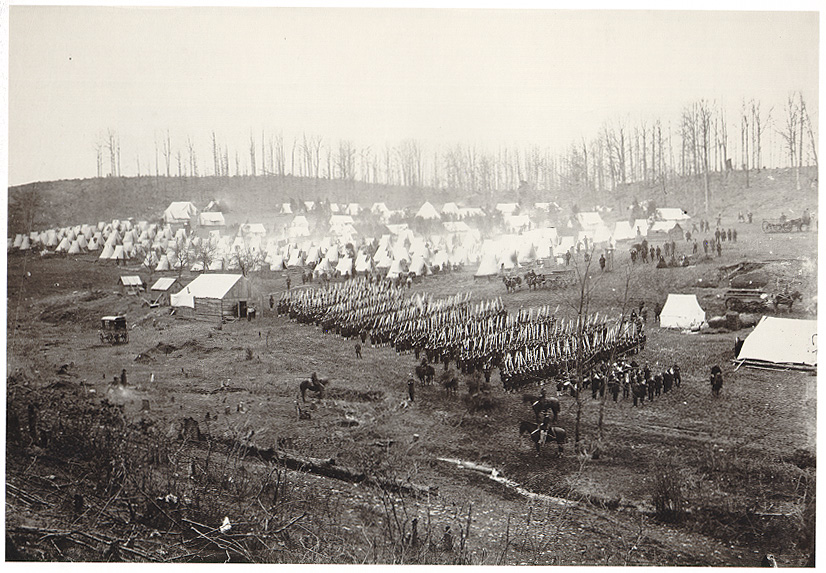

Franklin County Soldiers


Franklin County Soldiers were scattered across the eastern and western theaters of the Civil War
Franklin County Soldiers | |
|
|
 Franklin County Soldiers were scattered across the eastern and western theaters of the Civil War |